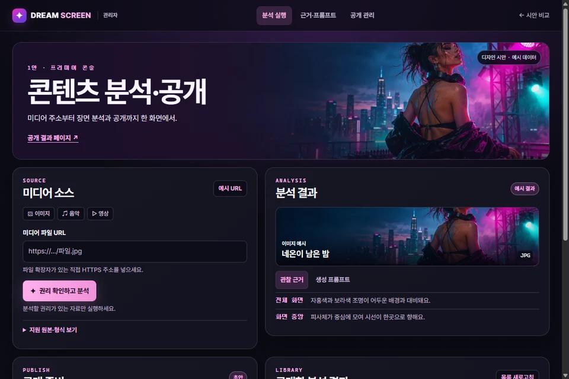

관리자 UI 디자인
콘텐츠 분석·공개 시안 3개
분석 체크박스를 빼고, 주소 입력부터 공개 관리까지 한 화면에서 이어지게 구성했습니다. 각 안을 열어 버튼과 상태를 확인할 수 있습니다.
예시 데이터로 움직이는 시안입니다. 공개·철회는 이 시안에서만 반영됩니다.
관리자 UI 디자인
분석 체크박스를 빼고, 주소 입력부터 공개 관리까지 한 화면에서 이어지게 구성했습니다. 각 안을 열어 버튼과 상태를 확인할 수 있습니다.
예시 데이터로 움직이는 시안입니다. 공개·철회는 이 시안에서만 반영됩니다.